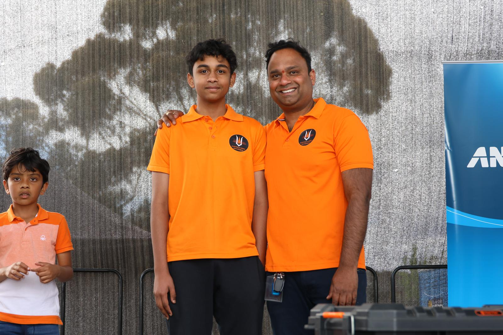

A thriving community is built on shared values, inclusivity, and progress. For Dinesh Gourisetty, these principles guide his leadership and vision for a stronger, more connected society.
His unwavering dedication to cultural, economic, and social development has made a profound impact on multicultural communities in Australia.
Cultural Leadership and Community Building
Dinesh has been a pioneering force in cultural integration through:
- Organizing Melbourne’s first Pongal cricket tournament, promoting cross-cultural engagement
- Hosting large-scale Ganesh Chaturthi celebrations, fostering unity and shared traditions
- Leading the Telugu Association of Australia (TAAI), strengthening cultural and educational initiatives
- Serving as Secretary of the Australia Hindu Mahasabha, advocating for religious and cultural preservation

His grassroots approach ensures that every initiative creates a lasting impact on community identity and cohesion.
Driving Sustainability and Environmental Advocacy
Recognizing the need for sustainability, Dinesh founded the Green Citizens Australia Network, which educates youth on environmental conservation and promotes sustainable living practices. His initiatives include:
- Climate awareness programs for schools and universities
- Community clean-up drives and green space restoration projects
- Sustainable business practices integrated into his commercial ventures
A Holistic Vision for Community Development
Dinesh’s strategic focus on societal progress encompasses:
- Infrastructure and Public Services – Enhancing healthcare, education, and recreational facilities
- Economic Stability – Supporting job creation and entrepreneurial ventures
- Cultural Harmony – Strengthening multicultural ties through inclusive initiatives
- Environmental Responsibility – Implementing policies that promote sustainability and conservation
Dinesh Gourisetty’s leadership extends beyond traditional roles; he is a catalyst for meaningful change.
His commitment to fostering economic, cultural, and environmental progress positions him as a leader who not only envisions a better future but actively builds it. Through his efforts, he continues to inspire individuals and communities to work together for a more inclusive and prosperous society.
Share this article:

Dinesh Gourisetty
Political Visionary & Community Leader
Dinesh Gourisetty is a community advocate and political leader dedicated to enhancing multicultural representation in Australian politics.
Popular Posts

A Visionary Leader for Our Community
March 18, 2025
From Entrepreneur to Community Champion
March 15, 2025
Comments (3)
This is an excellent analysis of the current political landscape. I particularly appreciated the section about community organizations as bridges for political engagement. As someone involved in local politics, I've witnessed firsthand how these organizations can mobilize communities that have traditionally been disengaged.
Thank you for highlighting the challenges as well as the opportunities. The point about "representation vs. tokenism" resonated with me deeply. Too often, diversity initiatives stop at visibility without addressing the deeper structural issues that prevent meaningful participation.
I'd be interested to hear more about your thoughts on digital engagement strategies for multicultural candidates. In my experience working on political campaigns, we've found that different communities engage with social media platforms in distinct ways, requiring tailored approaches rather than one-size-fits-all digital strategies.
Leave a Comment